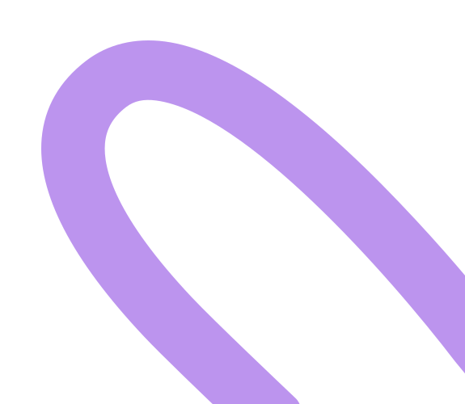
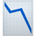

Teste A/B
UX Research, e escalabilidade global

A Atlas é uma plataforma de marketplace que iniciou sua expansão internacional pelo mercado de Londres. Como Product Designer, liderei o discovery e o redesign do fluxo de cadastro internacional, reduzindo o abandono e facilitando a criação e ativação de novos perfis.
Mesmo sem teste A/B, o MVP entregue em tempo recorde já trouxe impactos relevantes:
Validando a efetividade da simplificação do fluxo.

Menos etapas e maior clareza no preenchimento.
Mais usuários passaram a concluir o cadastro sem receio de comprometer sua identidade.
Eliminando a necessidade de retrabalho de design e desenvolvimento em novos países.
As alterações foram implementadas em tempo recorde como um MVP, priorizando velocidade de entrega e validação em produção. Para agilizar a prototipação, utilizei Figma Maker e Lovable, garantindo consistência visual e iteração rápida com o time de produto.